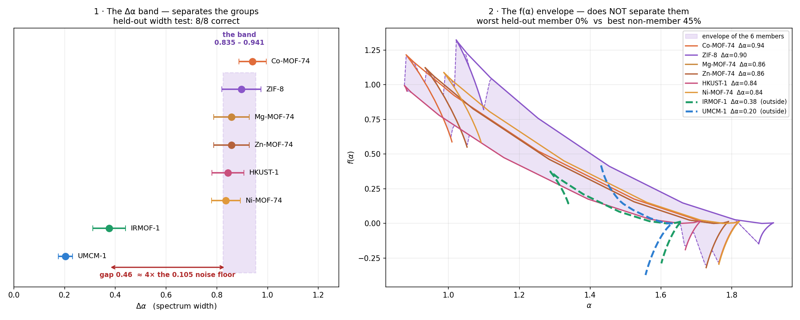

One page, start to finish: the problem, the published algorithm shown module by module in 3D, the limitations we found in it, the fixes we propose, the network and multifractal analysis built on top, and every line of source code — all computed live in your browser.
A single page tying the whole project together: the problem, every component we built, what each one actually achieved, an honest answer to the "influential nodes" question, the implementation map, and the roadmap forward.
Metal–organic frameworks are designed the way buildings are: you choose components — an inorganic node (a metal cluster) and an organic linker — and they assemble into a periodic framework. Everything useful about a MOF (surface area, pore size, thermal and chemical stability, catalytic behaviour) follows from which components were used and how they connect.
So when a MOF exists only as a crystal structure file, the foundational question is: what building blocks is it made of? That is what a decomposition algorithm answers, and every downstream use — database search, similarity matching, machine-learning featurisation, inverse design — inherits whatever answer it gives. If the reported node is not the species that actually exists in the crystal, everything built on top of it is reasoning about a material that does not exist.
.cif file contains atomic positions and the unit cell — and no bonds at all. The format has no field for them. Every bond used by every step of the pipeline is inferred from interatomic distances, never read. That single fact is the origin of several of the limitations we found.
The brief was to find and highlight the influential nodes, the ones with highest degree. We implemented it, and the result is more interesting than a simple yes.
In a perfect crystal, every symmetry-equivalent block is genuinely identical. Every Cu paddlewheel in HKUST-1 has exactly the same environment as every other. So a "top-k by degree" list is not discovering anything: it is sorting tied values, and whichever ones come out on top depend only on the order the blocks happened to be numbered in.
The ranking fails. The measurement succeeds completely — and it is not a consolation prize. A block's degree in the periodic graph is its coordination number: how many connections that building unit makes to the rest of the framework. In reticular chemistry this is the number that determines which net a given pair of building blocks can form at all. A 4-connected node with a 3-connected linker gives tbo; a 6-connected node with a 2-connected linker gives pcu. It is the descriptor the entire field is organised around.
Symmetry is what flattens centrality. Break the symmetry and it immediately becomes informative — so we simulate a missing-linker defect, which is not a contrived test but a real and heavily studied feature of MOF chemistry, UiO-66 especially.
The commonest question about this project is why a chemistry problem is being attacked with network theory. This section answers that, and the questions that usually follow it.
Because simulation does not scale to the size of the problem. A GCMC gas-uptake calculation takes hours per structure, and there are hundreds of thousands of known and hypothetical MOFs. Screening them all directly is not feasible.
A graph descriptor takes seconds. If a cheap structural number can narrow 100,000 candidates to a few hundred worth simulating properly, that is the whole value — not replacing simulation, but deciding what to simulate.
Start with a simpler question: how much network is near a given block? Grow a ball of radius r around it and count what falls inside. Do that for every influential block and you have a set of growth curves.
If a framework were perfectly uniform, every block would grow at the same rate and a single number — a fractal dimension — would describe the whole thing. Real frameworks are not uniform: some regions are tightly tied together, others open into large voids. So instead of one number you need a distribution of growth rates, and that distribution is the spectrum f(α).
| Quantity | What it means in plain terms |
| α | how fast the network grows around one particular block — a local dimension |
| f(α) | how much of the framework shares that growth rate |
| α₀ (the apex) | the typical growth rate — the framework's dominant dimension |
| Δα (the width) | how varied the framework is. Narrow = uniform throughout. Wide = a mix of tight regions and open ones |
| A (asymmetry) | which side dominates — mostly dense with a few voids, or mostly open with a few dense knots |
So a spectrum is a fingerprint of pore-network heterogeneity expressed as a curve, and Δα is that fingerprint reduced to one number — which is what makes a band possible at all.
The honest answer we reached is in Section 16, and it is partly yes and partly no. The spectra are now computed correctly and all 77 frameworks land in a tight, well-defined band. But we can also demonstrate that the width is currently dominated by a computational parameter rather than by chemistry, so the band cannot yet be read as a chemical statement. Establishing exactly what it would take to fix that is the result.
“Isn't this throwing away the chemistry?”
Deliberately, yes. The graph is unweighted — it does not know which element an atom is. That is a real limitation and we say so. It is also the point: whatever survives that stripping is pure architecture, and it transfers across chemistries in a way an element-specific descriptor cannot.
“Does Δα predict gas uptake?”
No, and we never claim it. Nothing here computes adsorption. Uptake comes from GCMC or experiment. Δα describes pore-network architecture only.
“Why only the influential nodes, not all of them?”
Because the paper's iNMFA method restricts the measure to the top-connected 10%, arguing those blocks carry the framework's structure. Section 11 shows this has a catch in a perfect crystal: every node ties, so “top 10%” is ambiguous. We report that rather than hide it.
“Why a periodic graph — why not just use the unit cell?”
Because a crystal has no edges. Drop the lattice translations and every bond crossing a cell face vanishes, the framework fragments, and coordination numbers come out wrong. Section 10 shows UiO-66 reporting 6-connected instead of the published 12.
“What would make this genuinely useful?”
Removing the size confound (Section 16), then testing the descriptor against measured properties on a set with real metal diversity. Both are concrete next steps, not open research questions.
Four components. For each: what it does, why it exists, what it achieved, and where to see it.
.cif can be uploaded and the whole pipeline runs on it live in the browser. The node and linker assignments can be inspected directly, which is the sanity check the later sections rest on.code_09_network_analysis.pyEvery file and what it is responsible for. The Python is the reference implementation and runs standalone; the JavaScript is a port of the same logic so the site can compute everything live in a browser. The two were cross-checked and agree on every value.
python3 code_00_pipeline_driver.py HKUST-1.cif — the full pipelinepython3 code_10_multifractal_spectrum.py — the spectrum and the bandpython3 code_09_network_analysis.py — coordination numbers, centralities, spectra
Where the project stands and what the next steps are, including the ones that are blocked and why.
All seven modules translated to runnable Python and validated against published crystallography on four structures. Python and JavaScript implementations cross-checked and in agreement.
Four documented, each with measured evidence rather than assertion: incomplete nodes, oxygen-only bridge chemistry, inferred-bond sensitivity, and silent conventions for rods and solvent.
Node completion and donor-agnostic bridging change the decomposition; confidence and convention reporting make the hidden choices visible. Each switchable independently so its effect can be measured on its own.
Labelled quotient graph with lattice translations on the edges. Produces literature-correct coordination numbers where the naive construction fails — UiO-66 at 12 rather than 6.
Centrality implemented three ways; the degeneracy result established and reported honestly. Laplacian spectra computed and shown to separate the four structures. Defect simulation working — this is the route by which influence becomes a measurable quantity rather than a tie-break.
This is the gate on the main claim. The goal of the form "all Zr-based MOFs occupy this region of spectral space" cannot be tested with one zirconium structure, however clean the separation looks on four. It needs a few hundred structures grouped by metal, from CoRE MOF or QMOF. Both analysis modules are written per-CIF, so batching them over a folder requires no change to the algorithms — only a loop, and the disk space.
Remove each linker in turn and rank blocks by the damage caused — measured as the drop in λ₂. That produces a genuine influence ranking, grounded in a physical consequence rather than in a tie-break, and connects directly to the well-studied defect chemistry of UiO-66.
Run the exported .cgd files through Systre and check whether the Laplacian spectrum agrees with the RCSR topology assignment. If two structures share a spectrum, they should share a net — a falsifiable test of whether the fingerprint means what we claim.
Metal-organic frameworks are designed by choosing building blocks, so identifying those blocks correctly from a crystal structure is the foundation everything else rests on. This site walks through the published metal-oxo decomposition algorithm module by module with real code beside a live 3D model, examines four limitations that remain in it, and shows in 3D what its output becomes once those limitations are addressed.
Start at Module 1 and work forward — each module shows its real source (verbatim excerpts, real line numbers) beside a live 3D model of HKUST-1 that updates to match. Use the module tabs to jump around, or Previous/Next to move through all 16 steps in order.
snurr-group/mofid — the reference implementation the field currently uses. Nothing here is modified: this is a visualisation of the published pipeline, stepped through one module at a time so the node and linker assignments the later network analysis depends on can be inspected directly.
code_XX.py — every one of them is a real, runnable file you can execute yourself: python3 code_04a_metal_oxo_algorithm.py HKUST-1.cif) rather than raw C++. The 3D model itself is driven by a separate, JS port of the same logic (mof_decompose.js) so it can run live in your browser. Both were checked against each other and against known crystal chemistry (e.g. HKUST-1's [Cu][Cu] paddlewheel nodes) before being used here.
All seven stages of the published pipeline on one screen, for any structure you upload.
The network half of this project follows a published method. This section states plainly what the paper provides, which parts we used, which part we initially got wrong, and what we added.
.cif to the block network — the object the method needs as input; (ii) supercell expansion, because a primitive cell of 7 blocks has no range of radii to fit a power law over; and (iii) the finding that iNMFA is degenerate on a defect-free crystal, since the influential blocks are symmetry-equivalent and share one growth curve. That is a genuine boundary condition on the method, not a failure of it.
Once a MOF has been decomposed into building blocks, the framework is a graph — blocks are vertices, bonds between them are edges. This page analyses that graph side by side with the real structure: the abstract network on the left, the actual 3D crystal on the right with the same blocks coloured by the same measure — so an "influential node" can be seen as both a graph vertex and a physical cluster.
A MOF is infinite. If the block graph is built naively — one edge per pair of blocks that happen to share a bond — periodicity is silently destroyed: two blocks joined by several bonds running in different lattice directions collapse into a single edge. The correct object is the labelled quotient graph, where an edge is identified by (blockA, blockB, translation). This is the same object Systre consumes.
Three complementary measures. Degree is the raw coordination number. Eigenvector centrality is the principal eigenvector of the adjacency matrix — a block scores highly when it is connected to other high-scoring blocks. Betweenness counts how many shortest paths run through a block, distinguishing bridges from merely well-connected vertices.
Remove a single linker and recompute. This is not an artificial exercise: missing-linker defects are a real and heavily studied feature of MOF chemistry, and UiO-66 in particular is known for tolerating them. Once one linker is gone the remaining blocks are no longer interchangeable, so centrality separates them — and λ₂ quantifies how much the framework was weakened.
The eigenvalues of the graph Laplacian L = D − A are invariant to how the vertices happen to be numbered, so two structures built from the same blocks in the same topology give the same spectrum regardless of atom ordering in the CIF. That is what makes the spectrum usable as a fingerprint. λ₂ (algebraic connectivity) measures how hard the net is to cut; λmax scales with the highest coordination number.
This is the analysis the brief actually asked for: highlight the influential nodes, compute a spectrum, and test whether frameworks of one family fall inside a common band. The spectrum here is not the Laplacian eigenvalues of Section 4 — it is the multifractal singularity spectrum f(α), obtained by covering the network with boxes of increasing radius and measuring how the box sizes seen by the influential nodes scale.
The method is sound; the first implementation returned an undefined spectrum for half the test structures. Each fix below is a specific, checkable defect.
The method comes from Xiao et al., "Deciphering the generating rules and functionalities of complex networks", Scientific Reports 11, 22964 (2021). Reading it closely revealed that our implementation — and the original notebook — used the wrong underlying measure.
| What the measure is | Random? | |
| box-covering (what we had) | tile the whole network with randomly-seeded boxes; a node's measure is the size of whichever box happens to cover it | yes — needs many trials |
| box-growing (the paper) | centre a box on node i and grow its radius; the measure is Mi(r), the number of nodes within distance r | no — fully deterministic |
ui(r) = Mi(r)/M · Uq(r) = Σ uiq · Uq ~ (r/d)τ(q) · α = dτ/dq · f(α) = qα − τ · generalized dimension D(q) = τ(q)/q · asymmetry A = ln[(α₀−αmin)/(αmax−α₀)] with α₀ at the maximum of f. Per the paper: width w is structural heterogeneity, α₀ is structural complexity, A>0 means frequent structures dominate ("clump"), A<0 means rare ones do ("thorn").
hMOF-### — they come from the hypothetical MOF database: computer-generated candidate structures that have never been synthesised. The notebook requested CoREMOF 2019, which is experimental, but the server returned hMOF records and nothing verified it. A check was added so this cannot recur silently.
A band is the range of spectrum width Δα that a group of frameworks shares, so a new framework can be tested for membership. Scaling this to 77 frameworks exposed an error in how we were computing the spectrum, which is now fixed — and revealed that the band cannot yet be read as a chemical statement. Both are set out here.
A multifractal spectrum f(α) must be an inverted parabola whose peak sits at q = 0, where f(α0) = D0, the fractal dimension. Ours sloped downhill instead — a mathematics problem, not a materials result. With the corrected τ, all 77 frameworks now peak at q = 0.
The paper defines the mass exponent as a ratio:
Over several radii that is a straight-line fit through the origin — the relation 𝒫q ~ (r/rN)τ carries no prefactor. Our code used np.polyfit(x, y, 1) and took the slope, which is a fit with a free intercept. At q = 0 that difference is fatal:
pr_i^0 = 1, so 𝒫0 = |I|, the count of influential nodes;The peak is pinned to zero and the parabola disappears. Measured across the dataset: τ(0) = 0 and f(0) = 0 in all 77 frameworks, and not one of them peaked at q = 0. With the paper's definition ln(r/rN) < 0, so τ(0) = ln|I| / negative < 0 and f(α0) = −τ(0) > 0 — the peak returns.
| τ definition | τ(0) | f(0) | peak at | inverted parabola? |
| free-intercept slope (ours) | 0.0000 | 0.0000 | q = −4 | no |
| paper: ln 𝒫q⁄ln(r⁄rN) | −3.5028 | +3.5028 | q = 0 | yes |
inmfa(..., tau_mode="paper"), now the default. tau_mode="slope" reproduces the old behaviour so the correction can be demonstrated rather than asserted.
All 77 spectra land in a tight band. The question is whether that band is telling us about chemistry. With published pore diameters available, it can be tested directly — and the answer is no, not yet.
Generated by Step 11 of mof_band_analysis.ipynb when you run it — the τ correction, the spectra, the band, and the size confound shown three ways.

Finding and reporting a confound in your own headline claim is a stronger position than presenting a correlation that does not survive the first check.
Source: mof_band_analysis.ipynb · data band_data.js · plotting band_page.js
Everything here is computed live in your browser by mof_network.js. The Python counterpart produces identical results and can be run directly:
Click any file to read it here — full source, line numbers, no download and no web server needed. Modules 00–07 are faithful translations of the published snurr-group/mofid C++; modules 08–11 are this project's own work.